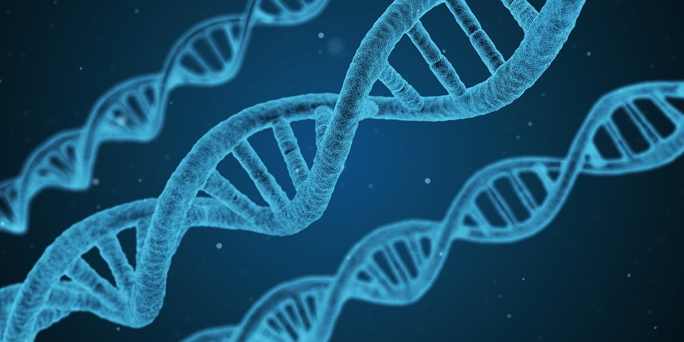
Descoberta
O DNA foi descoberto em 1869 por Johann Friedrich Miescher, um bioquímico alemão que tinha por objetivo identificar os componentes químicos do núcleo celular. Ele analisava o núcleo de células dos glóbulos brancos e notou a presença de algo ácido e desconhecido, que continha muito fósforo e nitrogênio. Na época, Johann chamou essa substância de nucleína.
Em 1880, Albrecht Kossel, estudava a química de tecidos e células e demonstrou que a nucleína continha bases nitrogenadas, por isso a presença de muito nitrogênio observada por Johann.
Em 1889, Richard Altmann, comprovou que a nucleína era um ácido, dando-lhe o nome de ácido nucleico.
Em 1912, Phoebus Levine e Walter Jacobs concluíram que o componente básico do ácido nucleico é o nucleotídeo, composto por uma base nitrogenada, uma pentose e um fosfato.
Em 1943, Oswald Avery e sua equipe, fizeram uma experiência alterando o DNA de uma bactéria. A partir disso, notaram que essas alterações poderiam fazer com que bactérias não infecciosas passassem a ser infecciosas. Por conta disso, comprovaram que o DNA (ácido desoxirribonucleico) é o responsável pela transferência de material genético entre as células, processo chamado de transformação. Seus experimentos sugeriam que o DNA seria o material genético básico da célula.
Rosalind Franklin era uma química britânica, que contribuiu para o entendimento das estruturas moleculares do DNA, RNA, vírus, carvão mineral e grafite. Em 1952, obteve imagens do DNA cristalizado, por meio de difração de raios x. Trabalhou com Maurice Wilkins no King's College London.


Foto 51 - Difração de raio X de DNA
Em 1953, James Watson e Francis Crick descobriram, a partir das imagens obtidas por Rosalind, a estrutura do DNA de dupla-hélice.
Esse foi o grande marco que daria início à área de Biologia Molecular. Com o passar do tempo, novas informações sobre o chamado ácido desoxirribonucleico (DNA) foram sendo descobertas.
Localização
O DNA é essencial para o funcionamento e manutenção das células e se encontra dentro delas. Mas onde? Dependendo da célula onde o DNA está inserido, sua localização muda:
Células procarióticas são simples e constituem seres unicelulares como as Bactérias e Arqueas. Essas células não possuem núcleo e, por isso, o DNA se localiza disperso no citoplasma.
 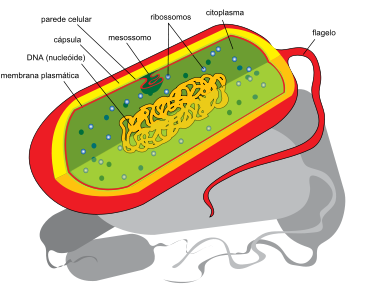
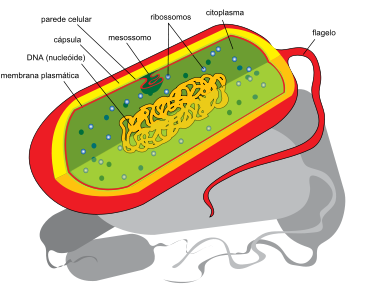
Procarioto
Já as células eucarióticas são mais complexas. Fungos, plantas e animais são formados por células eucarióticas. Essas células possuem várias organelas e um núcleo envolto por uma membrana, onde o DNA é guardado.
 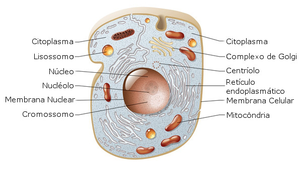
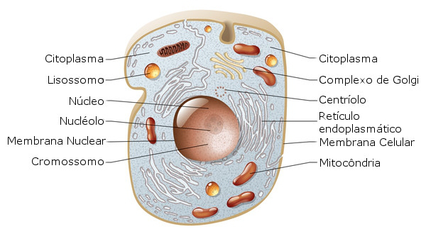
Eucarioto
Estrutura
O DNA tem uma estrutura de dupla-hélice, ou seja, duas fitas que se enrolam entre si. Essas fitas são formadas por nucleotídeos que possuem uma base nitrogenada, uma desoxirribose e um grupo fosfato.
As bases nitrogenadas são um composto cíclico de carbono com nitrogênio e podem ser de 2 tipos: Pirimidinas (como a Timina, Citosina e Uracila) ou Purinas (como a Adenina e Guanina). Essas bases ficam voltadas para dentro da dupla-hélice e são complementares, ou seja, elas podem se unir por ligações de hidrogênio. A Timina se une por duas ligações de hidrogênio à Adenina, já a Citosina por três ligações com a Guanina. A Uracila também se une à Adenina, mas é pertencente ao RNA. Há uma relação entre as bases nitrogenadas chamada de relação de Chargaff, que diz que as proporções entre Adenina e Timina são equivalentes, assim como as proporções entre Guanina e Citosina, em uma molécula de DNA.
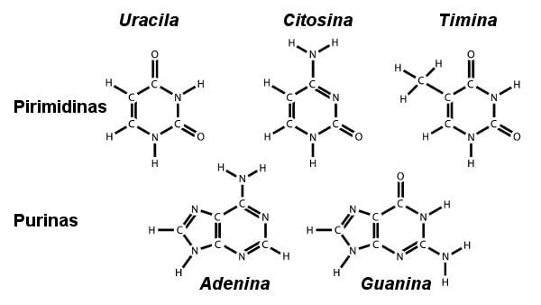
A desoxirribose é um açúcar de 5 carbonos (pentose). Esse açúcar é diferente do RNA (ribose), pois possui um oxigênio a menos (hidroxila da posição 2 é substituída por hidrogênio).
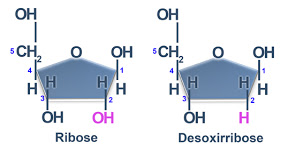
Já o grupo fosfato é um radical do ácido fosfórico. Na imagem a seguir, podemos ver a estrutura de um nucleotídeo, onde o grupo fosfato se liga a pentose que, por sua vez, se liga à base nitrogenada.
 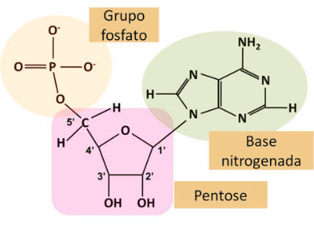
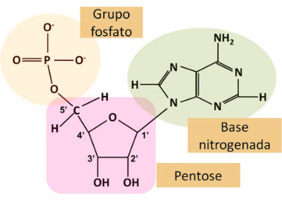
Nas próximas imagens podemos ver a estrutura do DNA como um todo, formado por nucleotídeos unidos por ligações fosfodiéster.
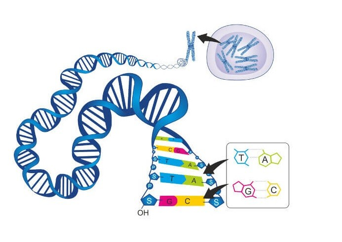 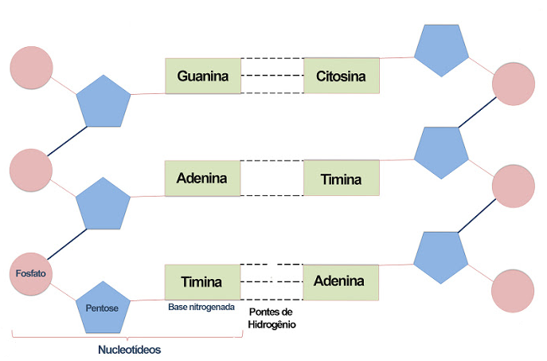
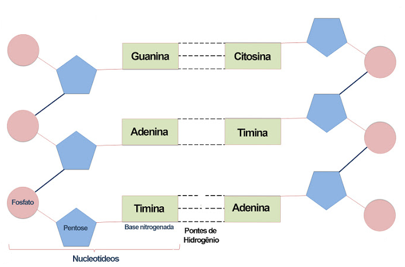
Importância
O DNA é de enorme importância, pois armazena toda a informação genética dos seres vivos. A estrutura do DNA está amplamente relacionada à informação genética, já que as sequências de bases nitrogenadas ATCG codificam essas informações. Por isso, o DNA é responsável, por exemplo, pelas características dos seres vivos, pelo bom funcionamento das células e pela produção de proteínas.
Material de Apoio
Conceitos que são importantes:
Célula e suas organelas
Célula procariótica e célula eucariótica
Estrutura do DNA
Vídeos:
https://www.youtube.com/watch?v=BIP0lYrdirI - Rosalind Franklin
https://www.youtube.com/watch?v=C5x073iElaA&t=643s - 60 anos da descoberta da estrutura do DNA
https://www.youtube.com/watch?v=rjH2xzCwNx0 - Citologia básica
https://www.youtube.com/watch?v=dqj1LO5iqv0 - Estrutura do DNA
https://www.youtube.com/watch?v=zwibgNGe4aY - O que é o DNA e como ele funciona
Leituras recomendadas:
Carvalho, Hernandes F.; RECCO-PIMENTEL, Shirlei M. A célula. 4. ed. 2019.
Capítulo 1,2 e 4. JAMES D. WATSON, et al. Biologia molecular do gene. 5a ed. Porto Alegre: ArtMed, 2006.
https://pt.wikipedia.org/wiki/Johann_Friedrich_Miescher
https://pt.wikipedia.org/wiki/Oswald_Avery
https://pt.wikipedia.org/wiki/Rosalind_Franklin